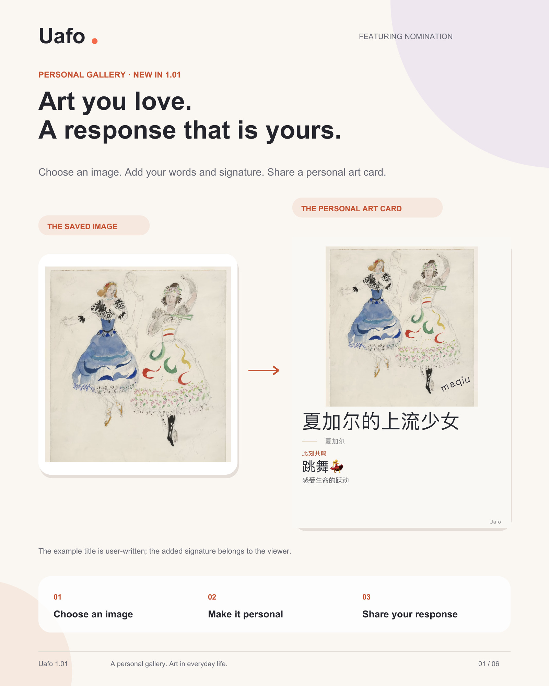
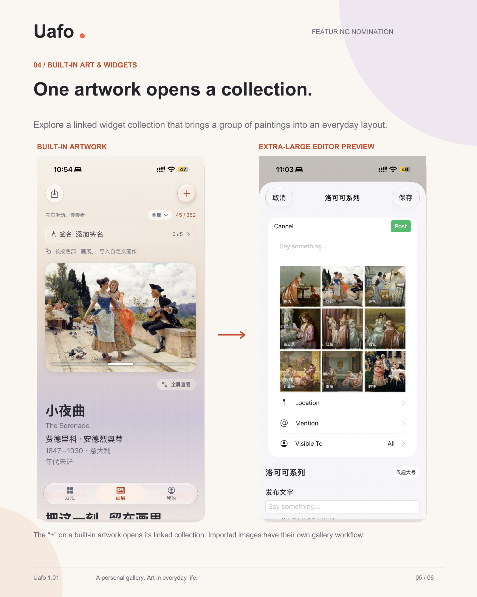

Uafo 1.01 · Featuring materials
Art you love.A response that is yours.
Bring images you love into a personal gallery. Add your thoughts and a signature, then share an art card that captures what the work means to you.
Version 1.01 is available · iPhone · Personal gallery and art-inspired widgets
01 / CHOOSE Your gallery, your choices. New in 1.01: import images from your photo library, add artwork details, and revisit your imported collection.
02 / RESPOND Leave your own impression. Write a reflection for each work and add a personal signature to record the encounter.
03 / SHARE Give the encounter a form. Export an art card combining the image, your words, and your signature. Save it or share it.
A closer look at Uafo Six illustrated pages. Select any image to open it at full size.

01 A personal gallery, beginning with your own choices.02 Import, add details, and browse.03 Your signature and words for this moment.04 Share what the artwork means to you.
05 Built-in art connects to a linked widget collection.06 Art-inspired scenes become part of daily phone use.
About these examples The first four pages show user-imported images, personal reflections, signatures, and exported cards. The last two show built-in artworks and their linked widget collections. Imported images are used in the personal gallery and art cards; they do not automatically generate these widget collections.
English explanations accompany the original Chinese interface screenshots. The example viewing title is user-written, and the added signature is a viewer annotation. The materials use the supplied real interfaces, exported cards, and Home Screen example.
Complete illustrated guides PDFs and images open directly. No account or sign-in is needed.